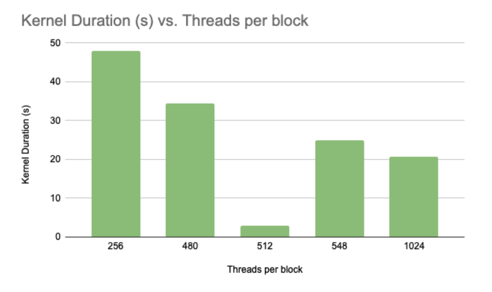

VRt Therapy
Team: Vani Jain, Nadia Jurkovich, Dana AlShehri
March 2021
This project was created with the goal of successfully implementing key principles of VR application design.
The project needed to include elegant wayfinding, travel, selection and manipulation techniques in VR.
The VR platform used was the Oculus Quest 2 and the application was developed from scratch using Unity and C#.
DML-IDE
Professor Hod Lipson, Sofia Wyetzner
Creative Machines Lab, Columbia University
June - December 2019
I was assigned to test and debug a program being developed by the Creative Machines Lab at Columbia University,
the Design Model Language interactive development environment.
My role as an undergraduate researcher was to test the program by creating different structures to simulate and
to find areas in the code and runtime that could be improved.
I used CAD programs, C++/C++ with CUDA and the Nvidia Profiler to complete these tasks.
The program, developed in C++, is used to render 3D structures as mass-spring objects and simulate forces on it.
The program then optimizes the mass of the structure by removing springs under the least amount of stress.
The program halts when the object reaches a certain deflection rate or percentage of original mass remaining.
The Interactive Development Environment was used to simulate any imported volume under a specified force.
This volume was the result of a cantilever beam subject to a torsional force on one end.
The result is a hollowed rectangular prism of springs with a spiraling effect.
My role was to ensure that the program was able to handle different cases and simulations, making it more
applicable to different real-world uses.

Because the program was very computation heavy when importing large objects that would turn into hundreds of thousands of mass-spring
objects, we wanted to benchmark the program in different configurations to find the fastest configuration of
memory organization and thread-block use.
Using the Nvidia Visual Profiler, we were able to discern which kernels hosted the longest computation times, and needed
reducing. We found that the function with the highest usage of processing power was a function called
computeSpringForces( ), which is a necessary step in each timestep of the simulation.
Computer Graphics
Professor Changxi Zheng, Columbia University
Spring 2021
The projects assigned throughout this course were meant to serve as a basic foundation of the principles of computer graphics.
Projects included tasks that spanned the entire graphics pipeline from scripted scenes that involved different rendering techniques to object loading
and fragment and vertex shading techniques. The course required an extensive knowledge of the rendering equation as well as knowledge about
mesh manipulation and data structures used to represent such meshes.